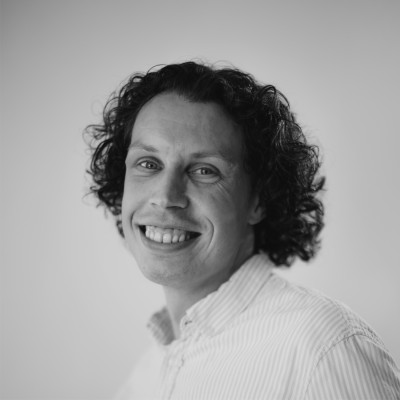

Kristian Damgaard Laugesen
Software Engineering Student, VIA University College · Aarhus, Denmark
I'm a software engineering student who spent the first six years of my career building things out of concrete and steel before deciding to build them out of code instead. After a diploma in structural engineering and several years designing bridges and precast elements, I'm now studying at VIA University College and working as a project engineer at DALTON alongside my degree.
I like problems with a clear structure where the right solution is hiding somewhere inside them - which is probably why I stayed in engineering even though the field changed.
Background
I graduated as a structural engineer from Aarhus University in 2020 and spent the following years working with precast concrete design at DALTON and on bridge and tunnel infrastructure projects at Ramboll. Somewhere along the way - helped along by a couple of CS50 courses - I found that the part of the job I liked best was automating the repetitive tasks and coding helpful tools to free up time. In August 2026 I then started the Software Engineering programme at VIA, while continuing to work part-time as a project engineer.
Outside of work
When I'm not studying or working, I'm usually watching a good football match, playing padel or sitting behind a drum kit. Music and sport are the two things that get me away from the computer.